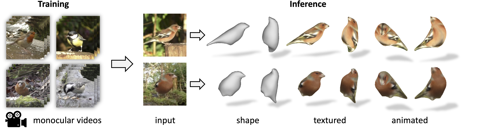

( * equal contribution )

DOVE - Deformable Objects from VidEos. Given a collection of video clips of an object category as training data, we learn a model that is able to predict a textured, articulated 3D mesh ofthe object from a single input image.
Abstract
Learning deformable 3D objects from 2D images is an extremely ill-posed problem. Existing methods rely on explicit supervision to establish multi-view correspondences, such as template shape models and keypoint annotations, which restricts their applicability on objects "in the wild". In this paper, we propose to use monocular videos, which naturally provide correspondences across time, allowing us to learn 3D shapes of deformable object categories without explicit keypoints or template shapes. Specifically, we present DOVE, which learns to predict 3D canonical shape, deformation, viewpoint and texture from a single 2D image of a bird, given a bird video collection as well as automatically obtained silhouettes and optical flows as training data. Our method reconstructs temporally consistent 3D shape and deformation, which allows us to animate and re-render the bird from arbitrary viewpoints from a single image.
Video
Method Overview

[Code]
Results

Demo
Paper

DOVE: Learning Deformable 3D Objects by Watching Videos
Shangzhe Wu*, Tomas Jakab*, Christian Rupprecht, Andrea Vedaldi
(*equal contribution)
arXiv preprint, 2021.
@Article{wu2021dove,
title = {{DOVE}: Learning Deformable 3D Objects by Watching Videos},
author = {Shangzhe Wu and Tomas Jakab and Christian Rupprecht and Andrea Vedaldi},
journal = {arXiv preprint arXiv:xxxx.xxxxx},
year = {2021},
}Acknowledgements
Shangzhe Wu is supported by Facebook Research. Tomas Jakab is supported by Clarendon Scholarship. Christian Rupprecht is supported by Innovate UK (project 71653) on behalf of UK Research and Innovation (UKRI) and by the European Research Council (ERC) IDIU-638009. This webpage template was originally made by Phillip Isola and Richard Zhang for a colorful ECCV project.